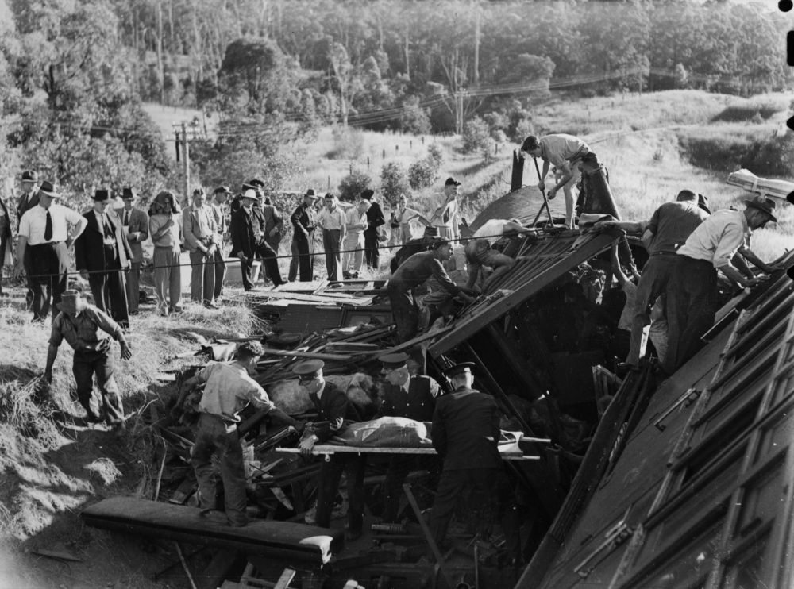
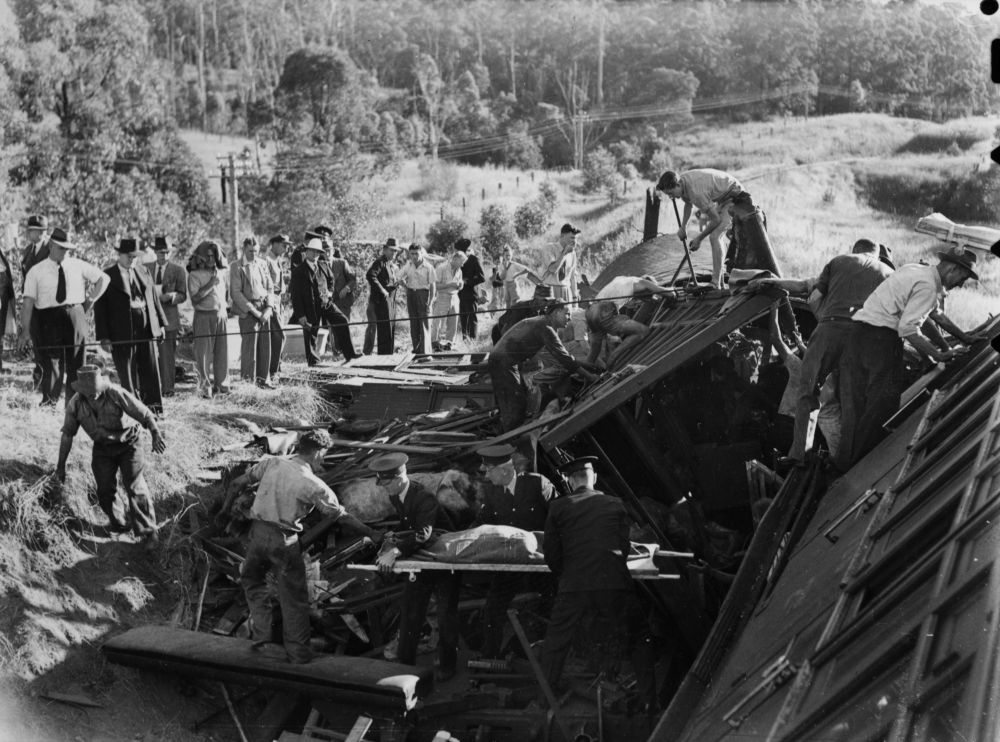
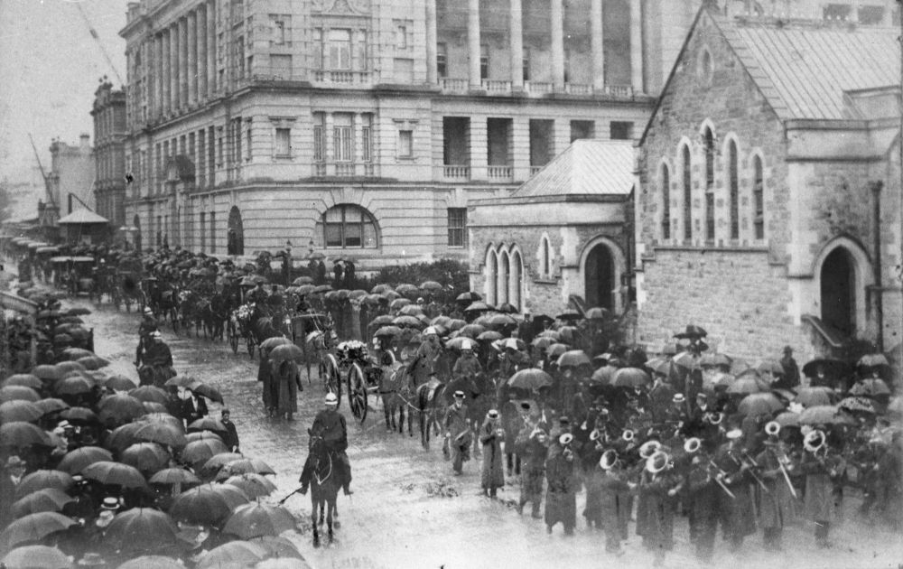
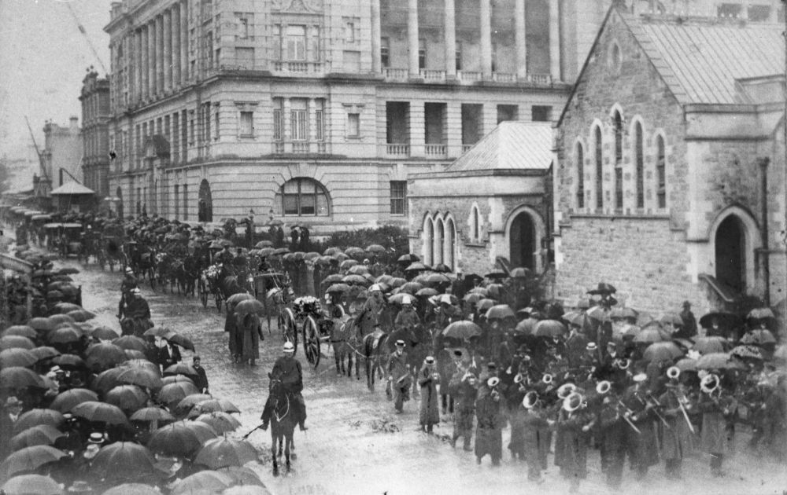
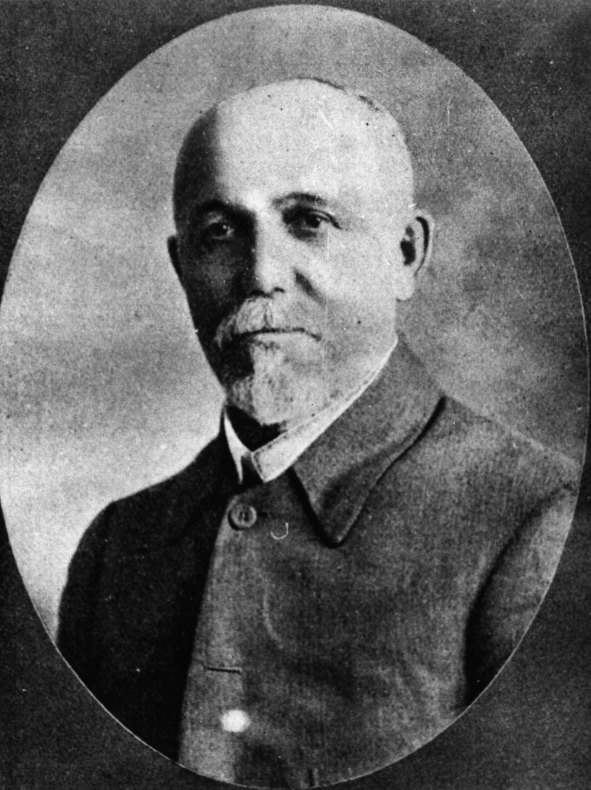

Railway People
A Journey from Sevastopol to Brunswick Street
Francis Ernest Delaney (10‑83‑17)
18‑year‑old Frank Delaney was born in Texas Queensland. He was a victim of one of Queensland's worst rail disasters. He died on 5 May 1947 and was buried with his father Lance Corporal Francis Patrick Delaney who had died in 1942 from service injuries. His mother, Beatrice was also laid to rest in this grave in 1985.
 

Crowd gathered at the Camp Mountain railway disaster, 1947 - State Library of Queensland
Rescue workers remove a body from a railway carriage at Camp Mountain, 1947. A crowd of people observe as a body is carried on a stretcher from the wreckage by rescue workers. The picnic train organised by the Customs and Excise department's social club, left Brisbane with nearly 500 women and children at 8.55 am. - State Library of Queensland
Thomas Hale (18‑23‑12)
Thomas Hale was born in the village of Castle Bytham in South Kesteven, Lincolnshire, England in 1844 and worked in the railways in England before migrating to Queensland in 1882. He joined the Railways Department in Queensland becoming a member of the Railway Employees Association. He rose to the position of general secretary of that organisation. During his railway career he worked as a porter, shunter, guard and signalman. Thomas died on 13 April 1910 and a memorial on behalf of the Queensland Railway Employees Association was erected over his grave. Sadly this memorial was demolished in 1979.
Henry James Beatty CE (12‑12‑22)
Civil engineer Henry Beatty was born on 20 May 1855 in Kensington London. His father, James Beatty was chief engineer for construction of the Grand Crimean Central Railway during the Crimean War. Henry married Elizabeth Ann White in Queensland on 7 July 1887. He was engaged as engineer for the construction of many railway lines in Queensland. He died on 16 June 1901 from typhoid fever.
William Weir (12‑38‑9)
William Weir was born in County Armagh ca. 1858, to parents Francis Weir and Margaret Glass. He was the popular stationmaster at Brunswick Street Station, Fortitude Valley at the time of his death on 13 September 1899. He was laid to rest with his late wife, Sarah Jane (née McLaughlin).
Lieutenant‑Colonel James Forsyth Thallon (11‑71‑14)
The son of a Scottish engineer, Robert Thallon and his wife, Jean née Forsayth, James Forsyth Thallon was the Queensland Commissioner for Railways from 1902 to 1911. He was born in Markinch, in Fifeshire, Scotland in 1847 and entered the railways in Edinburgh as a 15-year-old apprentice. He came to Queensland in 1882 to take up a management position in the Southern and Western Railways. After his death in 1911, subscriptions were collected from railways employees for the erection of a memorial over his grave. The Thallon Memorial Medal was awarded annually to the children of railway employees who received the highest marks in the Junior Examination.
 

James F, Thallon, Queensland Railways Commissioner, at the interstate railway commissioners and general managers' conference Melbourne in May 1909 - State Library of Queensland
State funeral for James Forsyth Thallon, Queensland Commissioner for Railways, Brisbane, Queensland, 27 March 1911, 1915 - State Library of Queensland
George Orr (12‑60‑1/2)
George Orr and his wife, Isabella (née Nicholson) arrived in Queensland on the Dacca in August 1889 from Linlithgow Scotland. George previously worked for the railways in the United Kingdom and was a First Class Guard in the Railways Department in Queensland at the time of his death on 24 February 1910, aged 68. Isabella was also laid to rest in this grave after her death in 1920.
Senator John Adamson (18‑111‑1)
John Adamson, Primitive Methodist minister and later politician, was born on 18 February 1857 at Tudhoe, County Durham, England, the son of Robert Adamson, a shoemaker, and his wife, Dorothy, née English. He came to Queensland with his young wife, Caroline (née Jones) in 1884. In 1915 he became Secretary for Railways in the Ryan Government. He was elected to the Senate in 1919. He died at Hendra railway station on 2 May 1922.

John Adamson, 1915 - State Library of Queensland
Michael Joseph Devitt (15‑29‑6)
Michael Joseph Devitt was born in 1892 in Warwick Queensland to Irish-born parents, Michael Joseph Devitt, a tailor and Catherine née Stokes. He managed railway refreshment rooms at a number of Queensland localities including Babinda, Ipswich, Helidon, Roma Street, Brisbane Exhibition, Bethania and Bundaberg where he and his staff were commended for their excellent service. He was president of the Bundaberg branch of the Australian Railways Union and served on the State council of the Union. He died on 23 May 1932 at the age of 39.
Barnard Charles Evans CMG (20‑20‑13/14)
Hon Colonel Charles Evans CMG was born in Taunton, Somerset on 15 April 1845, the son of John Evans, a railway porter and his wife, Mary Ann née Acland. Charles Evans rose from humble railway porter to Commissioner for Railways in Queensland from 1911 to 1918. In 1867 he married Mary Ann Thompson who is also buried in this grave as well as two of their children. He died in Brisbane on 31 December 1920.

Colonel Charles Evans - State Library of Queensland
Joseph Atkinson Holdsworth (1‑136‑33)
Born in 1845 in Ripley in the West Riding of Yorkshire where his father William was a surgeon, Joseph Atkinson Holdsworth served with the Railways Department in Queensland for 50 years starting as stationmaster in Ipswich in 1867. At the time of his death at the age of 71 on 2 June 1916 he was a railway examiner and prosecutor.
Acknowledgements
Compiled and presented by Lyn Maddock with research assistance by Darcy Maddock
Sources
- Adamson, John (1857–1922) - Biographical Dictionary of the Australian Senate
- Railway refreshment rooms - Queensland Historical Atlas
- RBDM Family History Journal, October 2014
- Trove - National Library of Australia
- William Simpson (1823 – 1899) - Cooke, Brian The Grand Crimean Central Railway, Cavalier House, Knutsford, 1990
- "Beatty's Railway". New Cherwell Press
- https://www.nationaltrust.org.au/places/grandchester-railway-station/publications.qld.gov.au/storage/f/2014-11-21T04%3A22%3A18.342Z/fhj-issue-5.pdf (broken link)